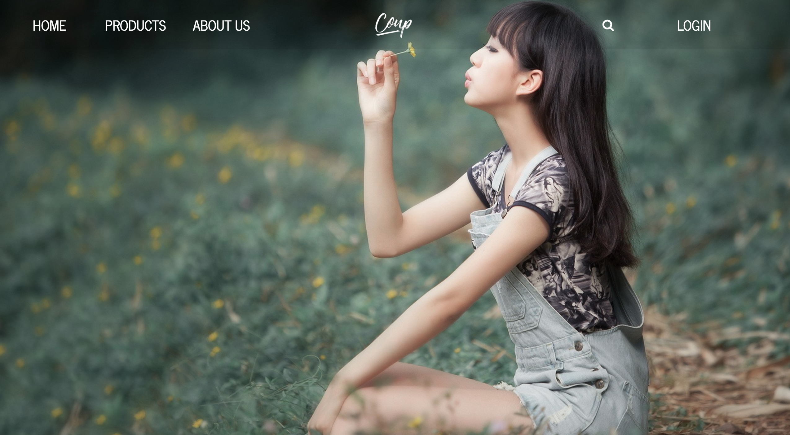

EXCEED CAMP - EXISTING BOAT
FRONT-END DEVOLOPER (HTML CSS JAVASCRIPT)
This is the exceed camp project.It is Existing Boat when an accident happened with your boat .It can control direction of boat from magnetic sensor and check balancing of boat by accelerator sensor analyse by graph , sonar check obstacle by Ultrasonic and notify with sound by buzzer when existing boat near the obstacle and check weather by rain sensor for turn on - turn off which control by standard servo and turn on led for help when emergency .

FACELESPEDIA
FRONT-END DEVOLOPER (HTML CSS JAVASCRIPT JQUERY NODE.JS)
This is Database final project.Is a site about displaying basic information of pro players. Competing pro teams Include statistical information within the Dota2 game. Websites can provide real time information, which will be updated at any time. This site is featured on the database itself.With a search system and easy-to-use display layout, the site is easy to check out.

COUP-DEG
FRONT-END DEVOLOPER (DJANGO JQUERY HEROKU PYTHON)
TThis is workgroup final project.This site is a full e-commerce website. It is the fashion of women's clothing, clothing, bags, scarves and also includes soap. Users can easily shop and pay for their services, and we have created a section for shop owners to easily manage the web.
